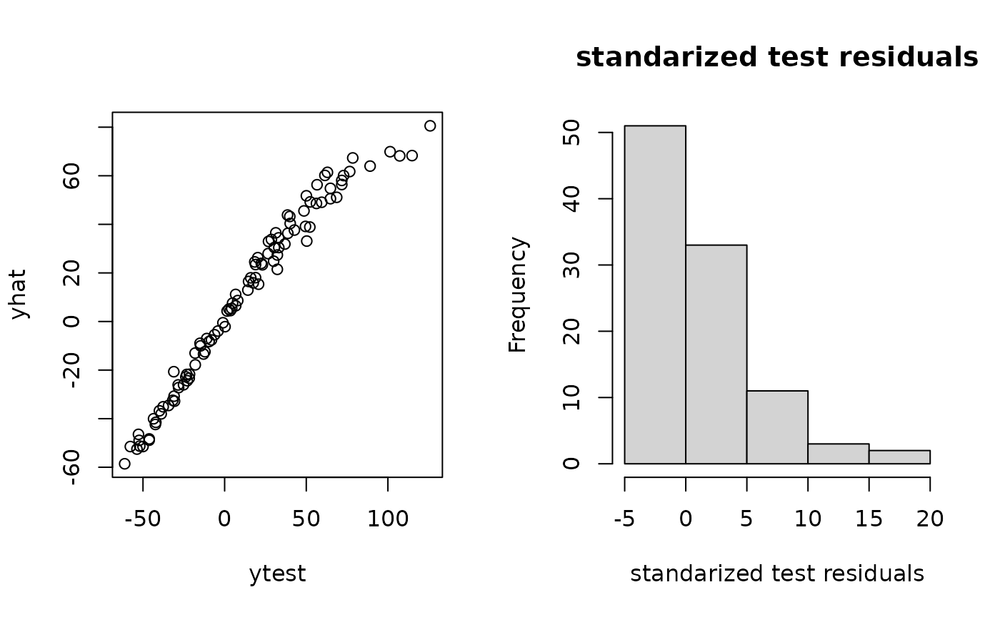
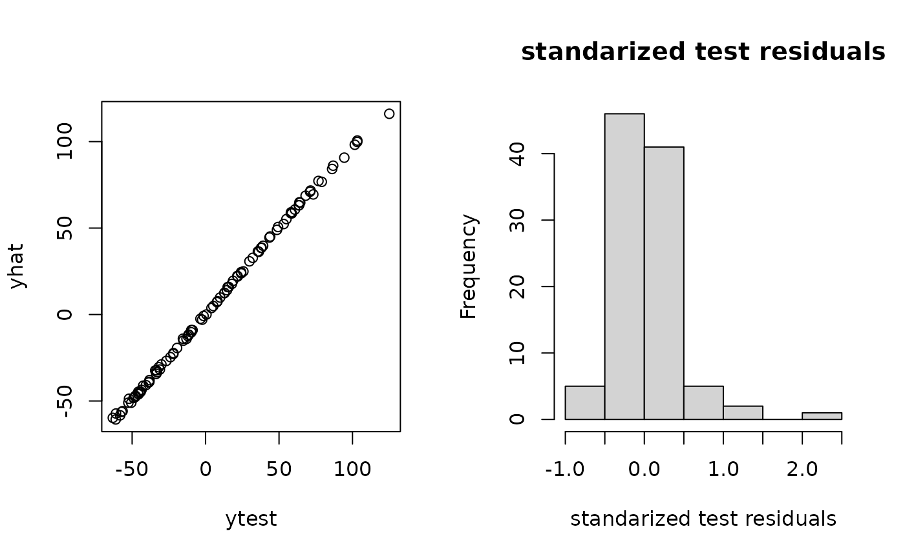

sampsize = 20
d = 3
x = matrix(runif(sampsize*d),ncol=d)
y = obtest_borehole3d(x)
xtest = matrix(runif(100*d),ncol=d) #prediction points
ytest = obtest_borehole3d(xtest)
om = new(outermod)
setcovfs(om, rep("mat25pow",3))
knotlist = list(seq(0.01,1,by=0.01),
seq(0.01,1,by=0.01),
seq(0.01,1,by=0.01))
setknot(om, knotlist) #40 knot point for each dim
p = 40
terms = om$selectterms(p)
loglik = new(loglik_std, om, terms, y, x)
coeffhere = rep(0,loglik$nterms)
loglik$compute_gradhyp = T
loglik$compute_gradpara = T
loglik$update(coeffhere)
loglik$val
#> [1] -108.6753
loglik$grad
#> [,1]
#> [1,] -0.038274172
#> [2,] 2.425036913
#> [3,] -0.691595549
#> [4,] 0.657873632
#> [5,] 0.017231699
#> [6,] 0.065124474
#> [7,] -0.298016728
#> [8,] -0.137920072
#> [9,] -0.048336880
#> [10,] 0.772967495
#> [11,] -0.007694948
#> [12,] 0.471530156
#> [13,] -0.431885580
#> [14,] -0.033985676
#> [15,] 0.085605751
#> [16,] 0.343361758
#> [17,] 0.525404206
#> [18,] -0.134303901
#> [19,] 0.201202931
#> [20,] -1.419905856
#> [21,] -0.437399106
#> [22,] -0.237961666
#> [23,] -0.400036932
#> [24,] -0.131710291
#> [25,] 0.133371303
#> [26,] -0.160438827
#> [27,] -0.815107033
#> [28,] -0.867958096
#> [29,] 1.203623271
#> [30,] 0.259840751
#> [31,] 0.467215220
#> [32,] -0.136092388
#> [33,] -1.331228712
#> [34,] -0.141128855
#> [35,] -0.295501502
#> [36,] 0.059302169
#> [37,] 0.648970712
#> [38,] 0.346844567
#> [39,] -0.133802008
#> [40,] -0.198684532
loglik$gradhyp
#> [,1]
#> [1,] 0
#> [2,] 0
#> [3,] 0
#> [4,] 0
#> [5,] 0
#> [6,] 0
loglik$gradpara
#> [,1]
#> [1,] 79.19142
hyp1 = hyp0
hyp1[2] = hyp1[2] + 10^(-4)
logpr = new(logpr_gauss, om, terms)
logpdf = new(lpdfvec, loglik, logpr)
logpdf$updatepara(c(0,2))
#loglik$updatepara(-2)
#logpdf$fullhess = T
logpdf$domarg = T
logpdf$compute_gradhyp = T
logpdf$compute_gradpara = T
logpdf$optnewton()
predt = new(predictor,loglik)
predt$update(xtest)
yhat = as.vector(predt$mean())
varpred = as.vector(predt$var())
par(mfrow=c(1,2))
plot(ytest,yhat)
hist((ytest-yhat)/sqrt(varpred), main="standarized test residuals",
xlab = "standarized test residuals")
totobj = function(hypl) { #my optimization function for tuning
regpara = logpdf$paralpdf(hypl$para)
reghyp = om$hyplpdf(hypl$hyp)
if(is.finite(regpara) && is.finite(reghyp)) { #if outside prior, ignore
om$updatehyp(hypl$hyp)
logpdf$updateom()
logpdf$updatepara(hypl$para)
logpdf$optnewton()
gval = hypl #match structure
gval$hyp = -logpdf$gradhyp-om$hyplpdf_grad(hypl$hyp)
gval$para = -logpdf$gradpara-logpdf$paralpdf_grad(hypl$para)#
list(val = -logpdf$val-reghyp-regpara, gval = gval)#
} else list(val = Inf, gval = hypl) }
hypl = list(para = getpara(logpdf), hyp = gethyp(om))
opth = BFGS_std(totobj, hypl, verbose=3) #do a quick and dirty optimization first
#> [1] "doing opt..."
#> [1] "Wolfe conditions"
#> [1] -73.20676 -404.16683
#> [1] 159.2356
#> [1] "Wolfe conditions"
#> [1] -6.816200 2.562925
#> [1] 146.0237
#> [1] "Wolfe conditions"
#> [1] -19.824409 -7.838043
#> [1] 126.1971
#> [1] "Wolfe conditions"
#> [1] -18.031639 -7.441952
#> [1] 108.1635
#> [1] "Wolfe conditions"
#> [1] -15.925656 -7.067958
#> [1] 92.23607
#> [1] "Wolfe conditions"
#> [1] -13.505174 -6.324651
#> [1] 78.72939
#> [1] "Wolfe conditions"
#> [1] -11.122697 -5.464062
#> [1] 67.60544
#> [1] "Wolfe conditions"
#> [1] -8.919165 -4.574680
#> [1] 58.68526
#> [1] "Wolfe conditions"
#> [1] -6.97720 -3.71965
#> [1] 51.70727
#> [1] "Wolfe conditions"
#> [1] -5.338547 -2.943222
#> [1] 46.36811
#> [1] "Wolfe conditions"
#> [1] -4.012849 -2.273590
#> [1] 42.35479
#> [1] "Wolfe conditions"
#> [1] -2.984341 -1.723774
#> [1] 39.37011
#> [1] "Wolfe conditions"
#> [1] -2.219487 -1.293859
#> [1] 37.15036
#> [1] "Wolfe conditions"
#> [1] -1.674764 -0.974148
#> [1] 35.4754
#> [1] "Wolfe conditions"
#> [1] -4.102778 -2.960755
#> [1] 31.37213
#> [1] "Wolfe conditions"
#> [1] -2.521198 -2.470987
#> [1] 28.85061
#> [1] "Wolfe conditions"
#> [1] -1.1169775 -0.9299833
#> [1] "finished opt..."
om$updatehyp(opth$vec$hyp)
logpdf$updatepara(opth$vec$para)
logpdf$optnewton()
opth = BFGS_lpdf(om, logpdf,
rho=hypl,
verbose = 3, newt= T)
#> [1] "doing opt..."
#> [1] "Wolfe conditions"
#> [1] -73.20649 -404.12624
#> [1] 159.2359
#> [1] "Wolfe conditions"
#> [1] -6.816368 2.559627
#> [1] 146.0239
#> [1] "Wolfe conditions"
#> [1] -19.827812 -7.843159
#> [1] 126.1939
#> [1] "Wolfe conditions"
#> [1] -18.020324 -7.428989
#> [1] 108.1716
#> [1] "Wolfe conditions"
#> [1] -15.926971 -7.071899
#> [1] 92.24283
#> [1] "Wolfe conditions"
#> [1] -13.501880 -6.324253
#> [1] 78.73944
#> [1] "Wolfe conditions"
#> [1] -11.118589 -5.463831
#> [1] 67.6196
#> [1] "Wolfe conditions"
#> [1] -8.914823 -4.573821
#> [1] 58.70376
#> [1] "Wolfe conditions"
#> [1] -6.971799 -3.716735
#> [1] 51.73117
#> [1] "Wolfe conditions"
#> [1] -5.334335 -2.940698
#> [1] 46.39622
#> [1] "Wolfe conditions"
#> [1] -4.011163 -2.275612
#> [1] 42.38459
#> [1] "Wolfe conditions"
#> [1] -2.980638 -1.716927
#> [1] 39.40361
#> [1] "Wolfe conditions"
#> [1] -2.22385 -1.29841
#> [1] 37.1795
#> [1] "Wolfe conditions"
#> [1] -1.6742460 -0.9733213
#> [1] 35.50506
#> [1] "Wolfe conditions"
#> [1] -4.111090 -2.963511
#> [1] 31.39347
#> [1] "Wolfe conditions"
#> [1] -2.528464 -2.424492
#> [1] 28.86469
#> [1] "Wolfe conditions"
#> [1] -1.1272034 -0.9510195
#> [1] "finished opt..."
predtt = new(predictor,loglik)
predtt$update(xtest)
yhat = as.vector(predtt$mean())
varpred = as.vector(predtt$var())
par(mfrow=c(1,2))
plot(ytest,yhat)
hist((ytest-yhat)/sqrt(varpred), main="standarized test residuals",
xlab = "standarized test residuals")